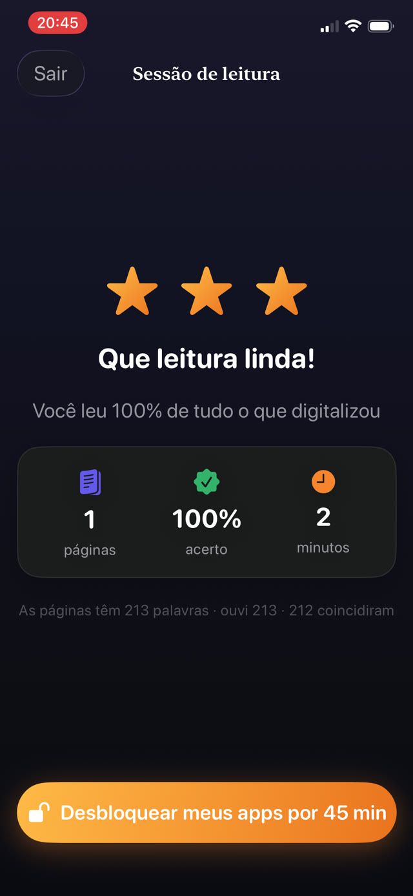

Todo mundo envolvido sabe que isso acontece. Vale entender para que serve realmente o registro, porque a resposta muda quanto esforço compensa gastar nele.


O que a professora realmente procura
Os títulos, quase nunca. Um registro de leitura é um substituto para uma única pergunta: esta criança lê em casa com regularidade? Trinta alunos e uma professora tornam a observação direta impossível, então o registro ocupa esse lugar.
O que significa que o sinal útil é a frequência e a constância, não o mérito literário. Vinte minutos em doze noites diferentes dizem muito mais a uma professora do que quatro horas num sábado.
Por que registros de papel viram ficção
- É escrito depois do fato, e a memória humana da leitura da terça passada vale quase nada.
- Depende de o pai estar presente e livre no momento exato em que a leitura aconteceu.
- É autodeclarado pela mesma pessoa que está sendo avaliada, o que é um problema em qualquer sistema de medição.
- Registra intenções com a mesma facilidade que fatos, e depois ninguém consegue distinguir.
O que um registro honesto contém
Se você vai manter um, faça com que registre coisas que não podem ser reconstruídas de memória:
- Data e hora de cada sessão, não só o dia.
- Quanto durou de verdade, em vez de quanto deveria ter durado.
- O que foi lido: o livro, e de preferência o trecho.
- Alguma evidência de que a leitura aconteceu, em vez de um visto que você mesmo colocou.
Automatizar o registro
O registro mais confiável é aquele que ninguém precisa lembrar de preencher. Se o registro é um subproduto da própria leitura, ele não pode derivar, não pode ser preenchido para trás e não depende da honestidade de domingo à noite.
Isso também elimina o constrangimento de um registro que exagera. Uma professora que confia no registro pode agir com base nele; uma que suspeita que é decorativo vai ignorá-lo, e aí foi trabalho perdido.
Exportar um PDF para a professora
O Guardian Reader guarda cada sessão de leitura automaticamente: a data e a hora, as páginas, os minutos, a porcentagem de correspondência, e o texto que seu filho realmente leu em voz alta.
O Premium exporta tudo isso em PDF pela aba de Progresso, pronto para enviar por e-mail ou imprimir. É um registro genuíno da prática em casa, gerado a partir de sessões conferidas em vez de lembrado na última hora.
Um registro construído a partir de leitura conferida
Como cada sessão é conferida com as páginas digitalizadas enquanto acontece, o registro não é uma afirmação sobre a leitura. É um subproduto dela. Essa distinção é toda a razão pela qual vale a pena entregar a exportação a uma escola.